CHARMINAR
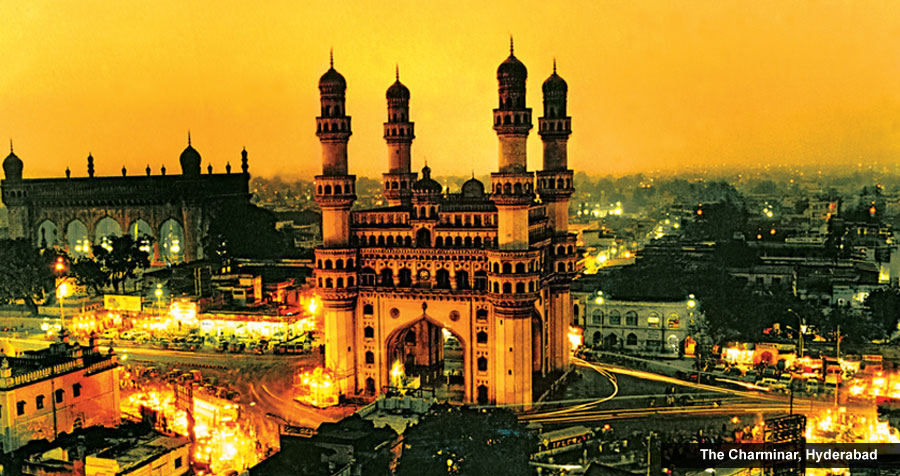It was believed that Muhammad Quli Qutb Shah built the Charminar in 1591 to honor Allah. However in reality this historical tourist place in India was built to signify the end of plague in the city. Legend has it that there is a secret tunnel from the monument to Golconda fort but it hasn’t been discovered till date. Each minaret of this monument has four stories and every arch has one clock.
The Charminar ("Four Minarets"), constructed in 1591, is a monument and mosque located in Hyderabad, Telangana, India. The landmark has become a global icon of Hyderabad, listed among the most recognized structures of India. Charminar has been a historical place with mosque on the top floor for over 400 years and also famous for its surrounding markets. It is one of the tourist attractions in Hyderabad. It is where Many local festivals are celebrated in Charminar area like Ramzaan.[1] The Charminar is situated on the east bank of Musi river.[2] To the west lies the Laad Bazaar, and to the southwest lies the richly ornamented granite Makkah Masjid.[3] It is listed as an archaeological and architectural treasure on the official "List of Monuments" prepared by the Archaeological Survey of India.[4] The English name is a translation and combination of the Urdu words Chār and Minar or meenar, translating to "Four Pillars"; the eponymous towers are ornate minarets attached and supported by four grand arches.
The Archaeological Survey of India (ASI), the current caretaker of the structure, mentions in its records, "There are various theories regarding the purpose for which Charminar was constructed. However, it is widely accepted that Charminar was built at the center of the city, to commemorate the eradication of Cholera", a deadly disease which was wide spread at that time. Muhammad Quli Qutb Shah had prayed for the end of the plague that was ravaging his city and vowed to build a Mosque at the very place where he prayed. According to Jean de Thévenot, a French traveller of the 17th century whose narration was complemented with the available Persian texts, the Charminar was constructed in the year 1591 CE, to commemorate the beginning of the second Islamic millennium year (1000 AH). The event was celebrated far and wide in the Islamic world, thus Qutb Shah founded the city of Hyderabad to celebrate the event and commemorate it with the construction of this building. Due to its architecture it is also called as arc de triomphe of the east.
Historian Masud Hussain Khan says that the construction of Charminar was completed in the year 1592, and that it is the city of Hyderabad which was actually founded in the year 1591. According to the book "Days of the Beloved", Qutb shah constructed the Charminar in the year 1589, on the very spot where he first glimpsed his future queen Bhagmati, and after her conversion to Islam, Qutb Shah renamed the city as "Hyderabad". Though the story was rejected by the historians and scholars, it became popular folklore among the locals.
History
The fifth ruler of the Qutub Shahi dynasty, Sultan Muhammad Quli Qutb Shah, built the Charminar in 1591, after shifting his capital from Golkonda to Hyderabad. Charminar has become a local and national landmark as well as a global icon of Hyderabad.
The Charminar was constructed at the intersection of the historical trade route that connects the markets of Golkonda with the port city of Machilipatnam. The Old City of Hyderabad was designed with Charminar as its centerpiece. The city was spread around the Charminar in four different quadrants and chambers, segregated according to the established settlements. Towards the north of Charminar is the Char Kaman, or four gateways, constructed in the cardinal direction. Additional eminent architects from Persia were also invited to develop the city plan. The structure itself was intended to serve as a Mosque and Madraasa. It is of Indo-Islamic architecture style, incorporating Persian architectural elements.
Structure
The Charminar masjid is a square structure with each side 20 meters (approximately 66 feet) long, with four grand arches each facing a fundamental point that open into four streets. At each corner stands an exquisitely shaped minaret, 56 meters (approximately 184 feet) high, with a double balcony. Each minaret is crowned by a bulbous dome with dainty petal-like designs at the base. Unlike the minarets of Taj Mahal, Charminar's four fluted minarets are built into the main structure. There are 149 winding steps to reach the upper floor. The structure is also known for its profusion of stucco decorations and the arrangement of its balustrades and balconies.
The structure is made of granite, limestone, mortar and pulverized marble and it weighs approximately 14000 tones. Initially the monument with its four arches was so proportionately planned that when the fort was opened one could catch a glimpse of the bustling Hyderabad city, as these Charminar arches were facing the most active royal ancestral streets.
There is also a legend of an underground tunnel connecting the Golconda fort to Charminar, possibly intended as an escape route for the Qutb Shahi rulers in case of a siege, though the location of the tunnel is unknown.
A mosque is located at the western end of the open roof; remaining part of the roof served as a court during the Qutb Shahi times. The actual mosque occupies the top floor of the four-storey structure. A vault which appears from inside like a dome supports two galleries within the Charminar, one over another, and above those a terrace that serves as a roof, bordered with a stone balcony. The main gallery has 45 covered prayer spaces with a large open space in front to accommodate more people for Friday prayers.
The clock on the four cardinal directions was added in 1889. There is a vazu (water cistern) in the middle, with a small fountain for ablution before offering prayer in the Charminar mosque.
The area surrounding Charminar is also known by the same name. The market in the areas is famous for jewellery and garments. The monument overlooks another grand mosque called the Makkah Masjid. Muhammad Quli Qutb Shah, the 5th ruler of the Qutb Shahi dynasty, commissioned bricks to be made from the soil brought from Mecca, the holiest site of Islam, and used them in the construction of the central arch of the mosque, hence its name.
A thriving market exists around Charminar: Laad Baazar is known for its jewellery, especially exquisite bangles, and the Pather Gatti which is famous for its pearls. In its heyday, the Charminar market had some 14,000 shops.
Interesting fact: There is a cat’s head in one of the arches in order to ward off rats that once almost destroyed Hyderabad.
Entry fee: Indians- INR 5
Foreigners- INR 100
Open from: 9.30 am-5.30 pm
Must see: Laad Bazaar is an ideal spot to pick up a number of unique artefacts and there are several food joints in the market itself.
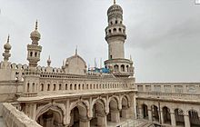
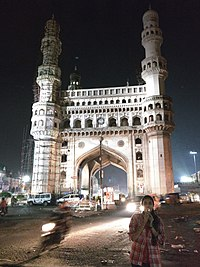
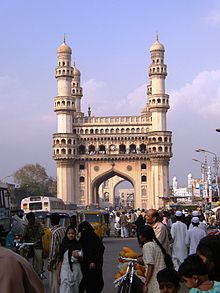
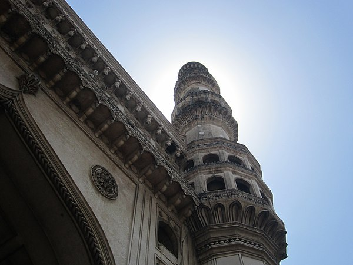
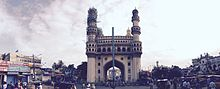
 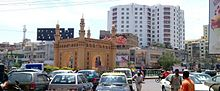
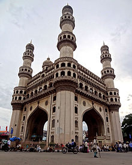
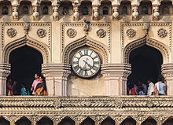
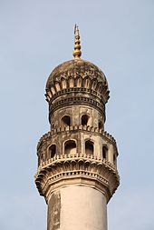
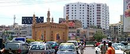
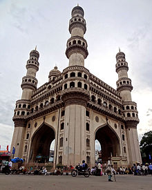
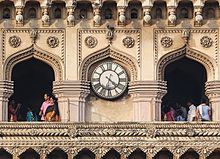
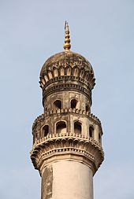
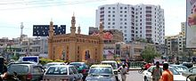
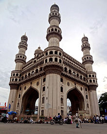
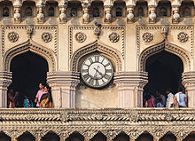
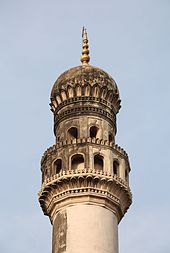
Developed By: Vineet Choudhary